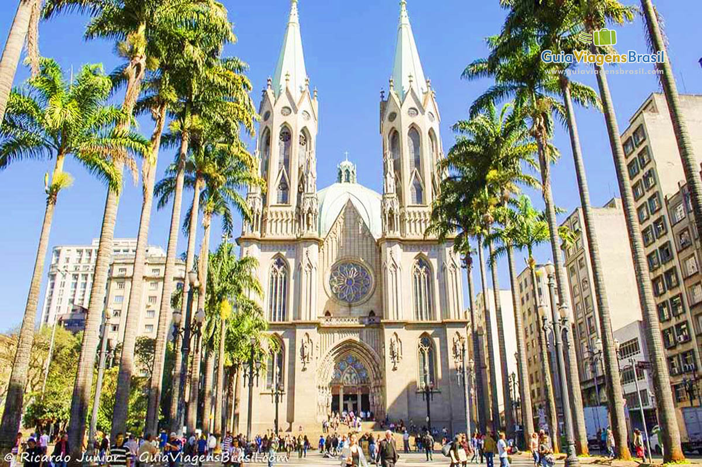

São Paulo
Hiago Miranda Pereira
Autor
Hiago Miranda Pereira
Estou cursando o tecnólogo de Análise e Desenvolvimento de Sistemas e fazendo estágio na área de dados. Sou curioso e gosto sempre de conhecer locais novos.
São Paulo - A cidade que nunca dorme.
São Paulo, a cidade que nunca dorme! Dia ou noite, sempre tem algo acontecendo; as baladas e bares fervem até o sol raiar. Nas ruas, o movimento nunca para, com pessoas indo e vindo a todo momento. É uma cidade agitada, cheia de oportunidades e diversão a qualquer hora do dia. Então, prepare-se para uma experiência intensa, porque em São Paulo, a festa nunca acaba!
Catedral da Sé
A Catedral da Sé em São Paulo é uma impressionante construção gótica inaugurada em 1954. Sua arquitetura com torres altas e arcos majestosos a torna um marco na cidade. Seu interior espaçoso e sereno possui uma nave central deslumbrante e vitrais coloridos. A catedral abriga um grande órgão de tubos e um museu de arte sacra em seu subsolo.
Palco de importantes eventos religiosos, a Catedral da Sé é um símbolo de fé e cultura em São Paulo. Sua localização central permite fácil acesso a outros pontos turísticos da cidade. Em resumo, a Catedral da Sé é uma joia arquitetônica e espiritual que cativa os visitantes com sua beleza, serenidade e importância histórica. Atividades ao ar livre:
Em São Paulo, você pode desfrutar de atividades ao ar livre, como passeios nos parques da cidade, como o Parque do Ibirapuera e o Parque Villa-Lobos, que oferecem áreas verdes, trilhas e espaços para atividades esportivas. Você também pode explorar a região da Avenida Paulista, que é fechada para carros aos domingos, permitindo caminhadas e passeios de bicicleta.
Vida noturna vibrante:
São Paulo à noite oferece uma variedade de opções para aproveitar. Explore a gastronomia diversificada em bairros como Vila Madalena e Jardins. A Rua Augusta é conhecida por sua vida noturna vibrante, com bares e casas noturnas. Desfrute de shows e eventos culturais em teatros renomados. Passeie pela Avenida Paulista, visite o MASP e desfrute de jantares em restaurantes.